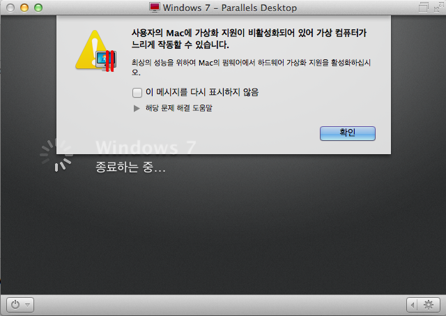

Parallels 드라이버를 로드할 수 없습니다.
결론부터 얘기하자면 App Store에서 Mavericks를 다시 다운받아서 설치하는 것으로 해결했다.
이럴땐 OSX가 참 사랑스럽다. Windows였다면 백업하고 포맷하고 다시 셋팅하는데 몇일이 걸렸을지도 모르는 일인데.
하지만 덕분에 확실히 무엇이 원인이었고 해결책이 무엇인지는 알 수 없게 되었다. :(
현상은 잘되던 Parallels가 갑자기 안되는 것이었다.
Parallels 가상 컴퓨터 목록에서 Windows를 선택하니
사용자의 Mac에 가상화 지원이 비활성화되어 있어 가상 컴퓨터가 느리게 작동할 수 있습니다.
라는 안내가 떴고 확인을 누르면
Parallels 드라이버를 로드할 수 없습니다.
라고 하면서 실행이 되지 않았다.


고객지원 페이지를 보니 디스크 유틸리티에서 디스크 권한 복구를 실행해 보라고 했지만 실행을 해보아도 별다른 것은 없었다.
혹시나 해서 디스크 권한 검사를 해본 후에 경고를 하나 발견했다.
경고: ‘System/Library/CoreServices/RemoteManagement/ARDAgent.app/Contents/MacOS/ARDAgent’ SUID 파일이 수정되었고 복구할 수 없습니다.
경고 문구를 가지고 검색해보니 Apple Support 페이지에서는 "무시해도 되는 디스크 유틸리티의 디스크 권한 복구 메시지"라고 했다.
그래도 검색을 계속해보니 나와 같은 현상을 겪는 분을 찾아낼 수 있었다.
그 분이 찾아낸 해결책은 ARDAgent.app 파일을 구해서 덮어쓰는 것이었는데 결국에는 그 분도 OSX를 다시 설치하는 것으로 해결을 한 것으로 보였다.
일단 해보는데까지 해봐야지 싶어서 나도 ARDAgent.app 파일을 구해서 덮어쓰기 해 보았는데.. 역시나 해결은 되지 않았다.
그러던 중에 또 찾아낸 방법이 iCloud를 로그아웃했다가 다시 로그인하면 해결이 된다는 이야기를 발견했다.
그대로 해 보았고 역시나 되지 않았다.
내 경우엔 Mac에 Postgresql을 설치한 후에 나타난 현상이라서 Parallels Postgresql로도 검색을 해보았는데 특별히 문제될게 없어보였다.
그래서 결국은 App Store에서 OSX를 다시 설치하고 나니 정상적으로 동작을 한다. :)
결론은 좀 허무하지만 암튼 삽질 좀 했다는 이야기.